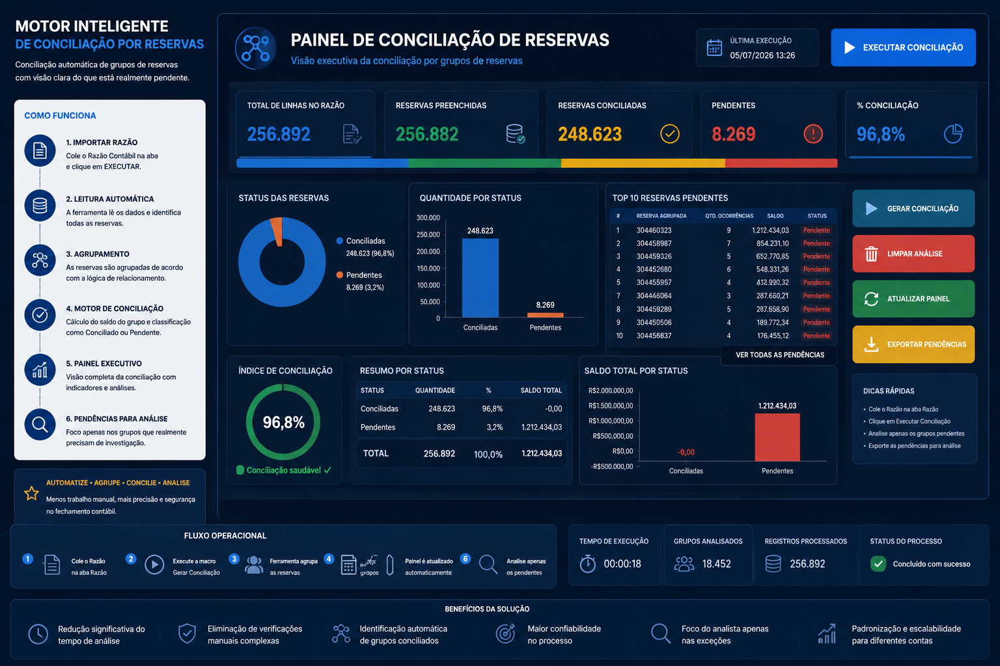

Motor Inteligente de Conciliação por Reservas
Ferramenta para identificar grupos de reservas no Razão Contábil, classificar automaticamente o que está conciliado e destacar pendências reais.

Problema
A análise era feita reserva por reserva. Itens podiam parecer pendentes individualmente, mesmo quando o grupo completo estava conciliado.
Objetivo
Automatizar leitura, agrupamento e conciliação das reservas, exibindo apenas grupos realmente pendentes.
Processo
Colar Razão
Ler reservas
Agrupar
Conciliar
Pendências
Solução
- Criação de colunas auxiliares automáticas.
- Identificação de reserva base e reserva agrupada.
- Cálculo do saldo do grupo.
- Classificação automática como Conciliado ou Pendente.
Tecnologias
Resultados
- Redução da análise manual.
- Identificação automática de grupos conciliados.
- Maior confiabilidade nas pendências.
- Foco do analista nas exceções.
Produto originado
Motor Inteligente de Conciliação por Agrupamento.
Imagem e indicadores adaptados com dados fictícios.